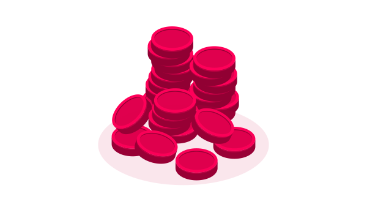

Quick links
Halloween special
30% off every pack
Until 1 November, on coins and subscriptions
Image studio
One sentence, her face
Describe a scene, get images and video
Chat
She answers like a person
Voice notes, photos and video, day and night
All
Blonde
Brunette
Redhead
Asian
Latina
MILF
Teen
Busty
Vanessa, 18
What's your favorite move? ⚡
Show me a cool trick! ✨
Want to go on an adventure? 🗺️
5 sec
10 sec
15 sec
300
Gender
Identity description
0/100
Female Voices
Personality
Your selection0 / 11 selected
Age
1 / 11Your selection0 / 10 selected
Tone
1 / 10Buy Coins
Top up your balance to unlock premium features
Your balance300 coins

Starter100
$1No savings
Popular
Basic1,000
$9$10Save 10%
Buy Coins
Best value
Pro10,000
$80$100Save 20%
Accepted Payment Methods